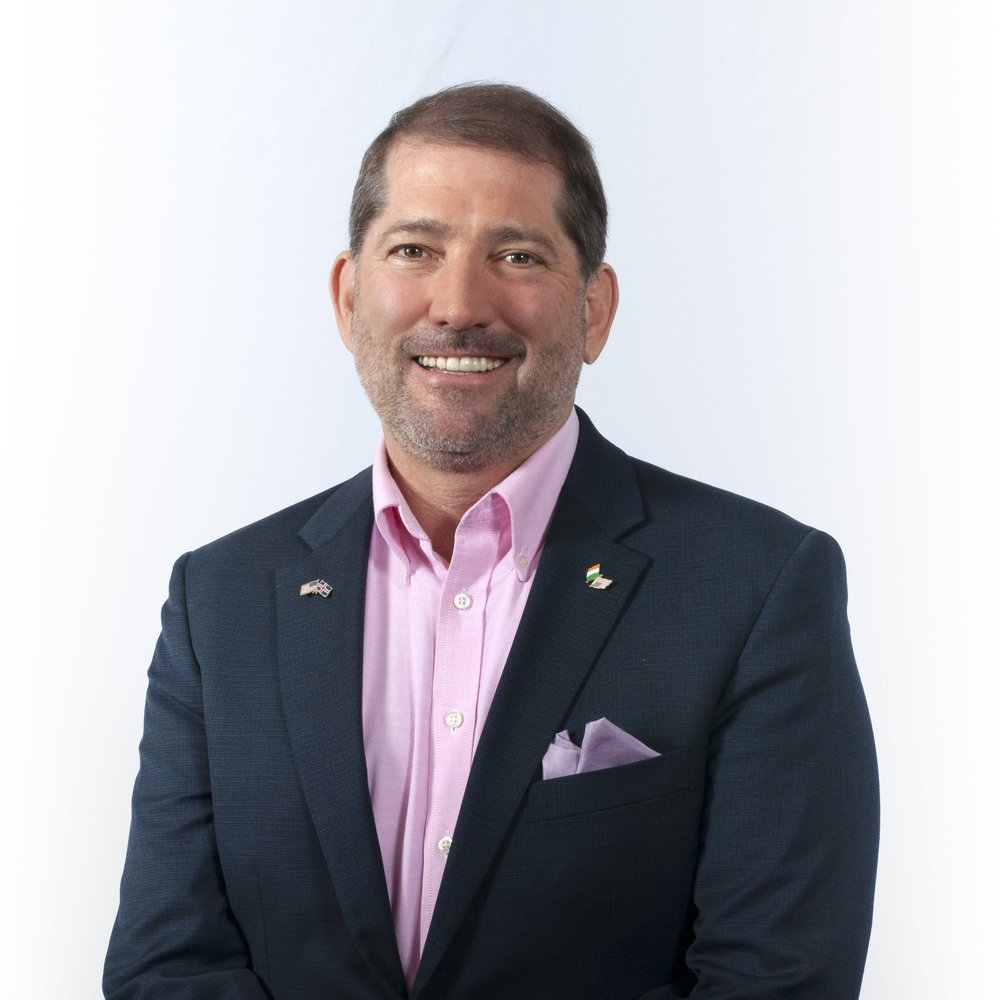

Transforming Complex Technology Challenges Into Measurable Business Results.
With more than 25 years of experience across healthcare technology, federal health systems and enterprise engineering, I lead technology transformation that connects engineering excellence with business performance.

Results drawn from recent leadership roles at MMIT and Fullbay, and a career spanning provider, payer, pharmacy and federal health.
Leadership Built on Technology, Transformation and Business Impact.
I'm an engineering executive with more than 25 years of experience building and scaling technology organizations across healthcare provider, payer, pharmacy and federal health systems. My work spans EHR integration, healthcare IoT, telehealth, pharmacy and payer analytics, and VA/DoD federal health platforms.
I've worked across the full evolution of healthcare data standards: from HL7 v2/v3 on the AHLTA military EHR program at Northrop Grumman, through veterans health data exchange at Accenture Federal Services and Optum, to SMART on FHIR EHR launch workflows at Sonifi Health. I engage product, clinical and operational stakeholders on FHIR resource modeling, clinical workflow integration and the regulatory implications of interoperability decisions.
I've inherited four consecutive underperforming engineering organizations, diagnosed root causes, restructured for accountability and rebuilt delivery culture. I've scaled teams from 10 to more than 70 engineers across onshore and offshore (India) locations, managed budgets up to $5.7M, and partnered directly with CTOs and CPOs on architecture roadmaps and product strategy.
Career-long HIPAA, SOC 2, FISMA and HITRUST experience means I treat regulatory constraints as a first-class engineering concern. My current focus is AI-enabled SDLC governance, engineering efficiency at scale and agentic workflow tooling in regulated environments, connecting technology strategy directly to measurable business outcomes.
Executive Leadership Approach
The themes that define how I lead, drawn from more than two decades of building and transforming engineering organizations.
Deep domain knowledge, applied at enterprise scale.
The seven disciplines I bring, spanning the clinical, regulatory, architectural and organizational realities of healthcare technology leadership.
Five case studies in transformation and measurable impact.
How I've led cloud modernization, enterprise analytics, organizational turnarounds and federal health platforms.
Three decades across healthcare, federal and enterprise technology.
Select any role to see my responsibilities and achievements.
Investing in the next generation of engineers.
I've spent more than sixteen years mentoring in competitive robotics, grounded in my foundation in computer science and mathematics.
Bachelor of Science in Computer Science
Minor in Mathematics
University of North Dakota
Grand Forks, North Dakota
Years as a FIRST Robotics (FRC) mentor
I develop and coach the next generation of engineers through competitive robotics.
World Championship qualifications in 9 years
Consecutive qualifications I've earned alongside student engineering teams.
IR rated Private Pilot
A lifelong interest of mine: aviation technology and the discipline of flight.
Let's Connect on the Next Technology Challenge.
For executive opportunities, technology leadership conversations and professional connections, I welcome thoughtful conversations with organizations building and transforming complex technology platforms.